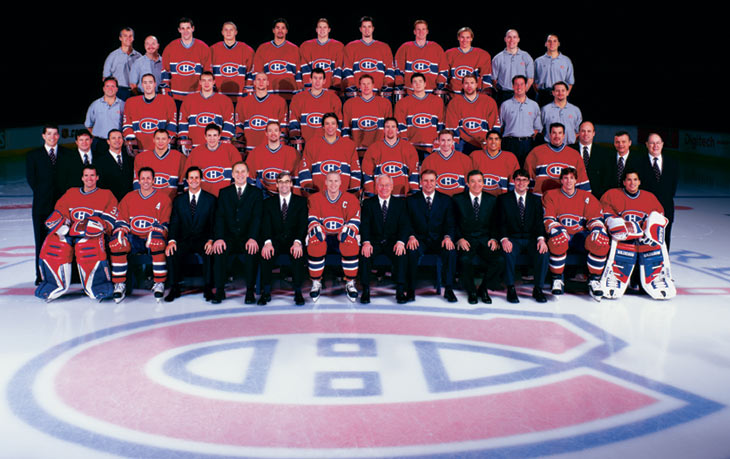

le pool officiel des séries de la du groupe SCA
Pensée du jour dedes
Dans la vie, ce n'est pas comment tu tombes, c'est comment tu te relèves.
choix des participants pour toutes les rondes
résultats FINAUX du classement